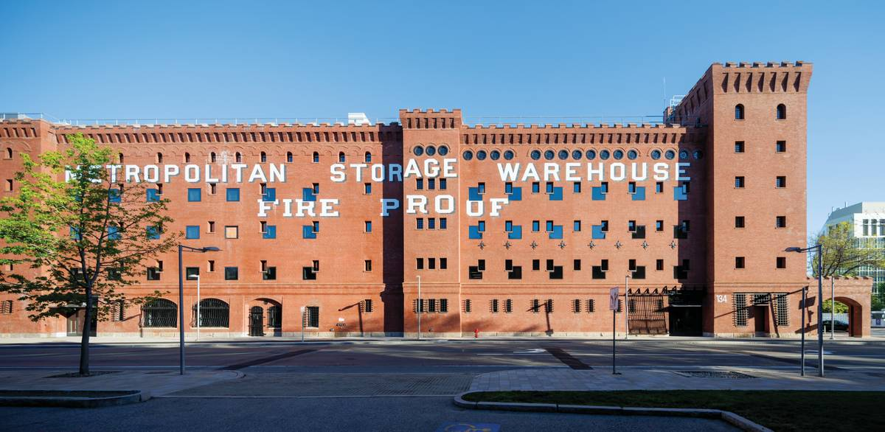
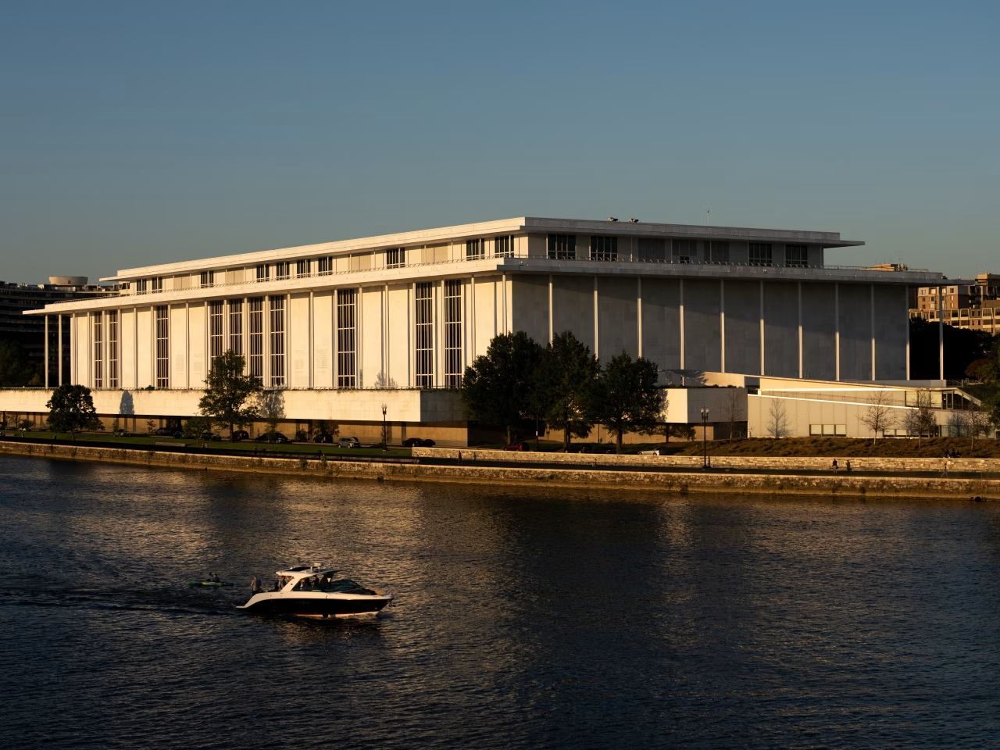
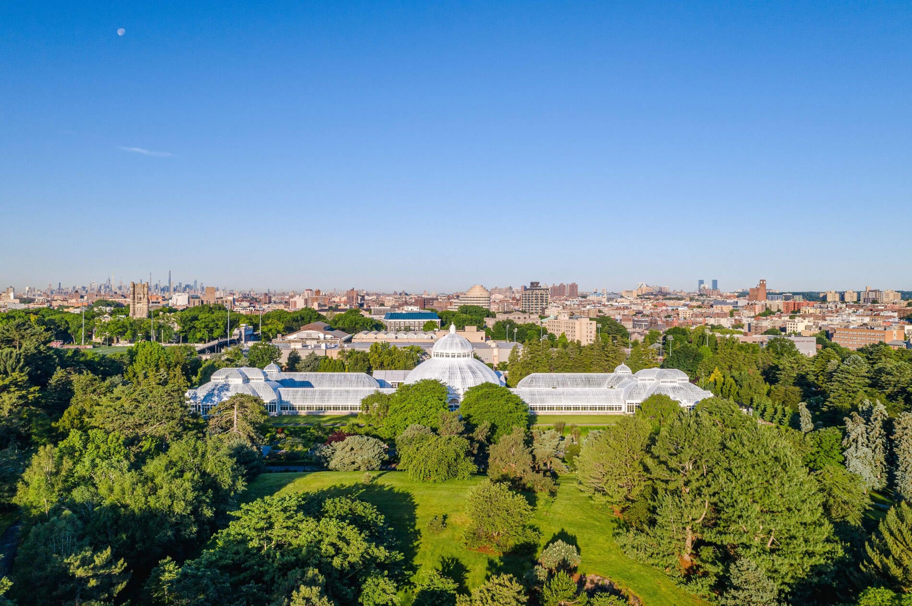

News

Architectural Record
Elizabeth Diller Wins 2026 Architect of RECORD Award by The Editors

Architectural Record
A Warehouse is Converted into the New Home of Architecture at MIT by Izzy Kornblatt

Wall Street Journal
Architects Never Loved the Kennedy Center. But They Don’t Want to See It Gone. by Ben Kesslen

The Architect's Newspaper
Diller Scofidio + Renfro selected to design new cafe and biofiltration system at New York Botanical Garden by Daniel Jonas Roche